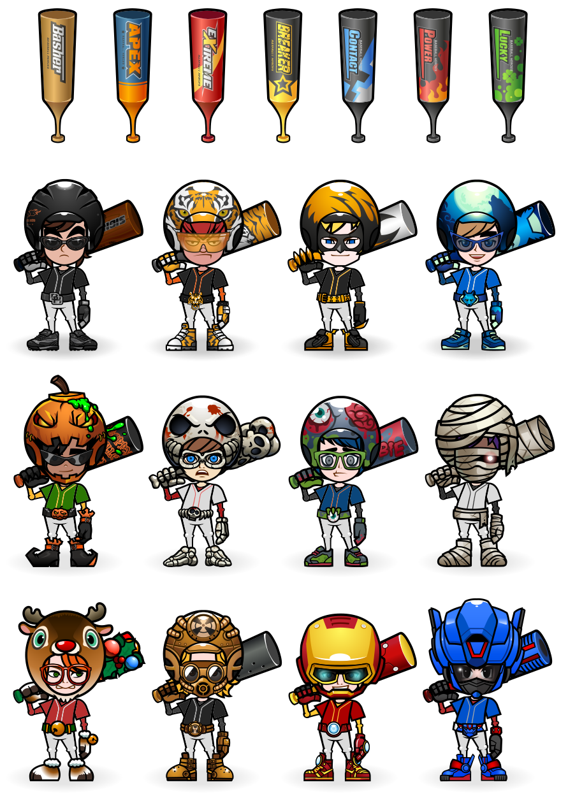
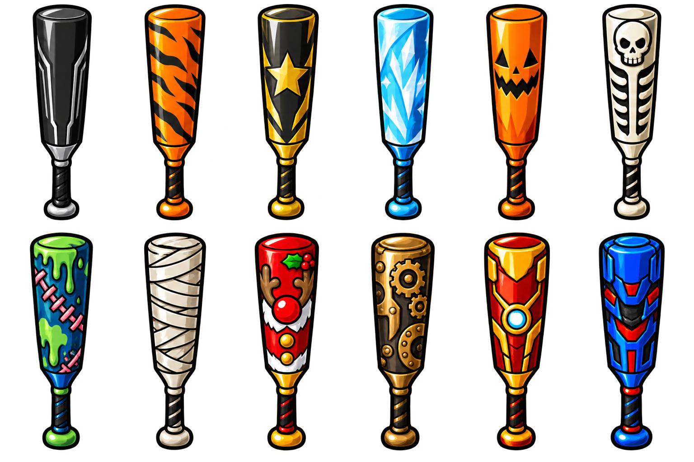

Mejoras 0.9.7
Puntos solicitados: 1, 2, 3, 4, 7, 8, 9, 10 y 12. Se conserva la cabeza 0.8.6, el progreso y las cuatro grabaciones aisladas. Las capturas de QA usan cuentas de prueba y valores preparados; las cuentas nuevas reales empiezan en nivel 1 de ROOKIE.
Abrir el juego · Guía para jugar con amigos · Notas y límites · Instrucciones de los nuevos gráficos
1. Cuerpo y movimiento del héroe
Doce cuerpos ilustrados: cuatro poses de HOME y ocho poses del swing, anclados por cuello y pies. Se recolorean y se almacenan en caché.
Antes · partido 0.9.6 Ahora · partido 0.9.7
Ahora · partido 0.9.7
La cabeza aprobada 0.8.6 conserva exactamente su código. El arte corporal es reconstruido y todavía difiere del original.
2. Defensa y corredores
Dieciséis poses defensivas para recoger, lanzar, atrapar elevado y recibir en base; doce de carrera, frenada, deslizamiento y celebración. Secuencias integradas en las viñetas de OUT.
Antes · OUT en 0.9.6 Ahora · OUT en 0.9.7
Ahora · OUT en 0.9.7
Las poses son nuevas reconstrucciones. No se inventa una resolución SAFE que no se haya observado.
3. Cinemáticas de hit y home run
Llegada suave a base, frenada y slide para batazos largos. Tres ambientes de HR con aproximación, trayectoria de pelota, reacción e impacto; las escenas espaciales tienen ventana y consola.
Antes · HR en 0.9.6 Ahora · una de las tres escenas de HR
Ahora · una de las tres escenas de HR
Se reutilizan y animan los personajes disponibles; siguen faltando cuadros originales intermedios.
4. Acabado de pantallas
Tipografía embebida compartida en marcos y botones; panel de colores del creador reubicado para no tapar controles. Libro de habilidades rediseñado en 4:3.
Creación · formas Creación · colores y borrador
Creación · colores y borrador
Las fuentes son sustitutas. Este pase no acredita paridad de todas las pantallas.
7. Libro con doce habilidades
Ocho habilidades nuevas, tres rangos, requisitos de nivel y habilidad previa, coste en puntos y una activa. Los efectos se aplican a poder, contacto, tolerancia de foul, combo, hits largos, suerte y defensa.
Requisitos bloqueados Rangos y habilidad activa
Rangos y habilidad activa
Árbol, nombres nuevos, efectos y requisitos son diseño local donde no existe evidencia suficiente del árbol original. No se regalan puntos a partidas antiguas.
8. Doce bates de colección
BOSS, TIGER, ALL STAR, ARCTIC, PUMPKIN, SKELETON, ZOMBIE, MUMMY, RUDOLPH, STEAM, ROBOT y MECHA completan los conjuntos existentes. Catálogo EquipmentCatalog: 105 entradas frente a 93.
Referencia aportada · bates y conjuntos
Nuevos bates · hoja transparente
Precios, niveles y estadísticas son locales; ilustraciones nuevas. En animación se aplica el material al bate de la pose, sin garantizar una silueta histórica exacta.
9. Hardworking Hitter y Lucky Hitter
Se añaden los dos logros, sus contadores y avisos de progreso durante el encuentro. Se consolidan al cerrar el partido y los premios se reclaman una vez. Las primeras metas visibles son 500 y 25 en los cuadros de 01:44 y 01:46.
Referencia · Hardworking Hitter 50/500 Partido 0.9.7 · avisos y ganancias
Partido 0.9.7 · avisos y ganancias
Criterios y niveles superiores son reconstruidos: turnos completados del héroe y efectos Lucky. Las partidas antiguas empiezan estos contadores en cero; no se inventa historial.
10. Calibración y premios medidos
Estudio cuadro por cuadro del vuelo visible; rectas más rápidas y menos variación aleatoria. Corrección de nueve premios legibles del ranking, incluidos los de un millón y superiores.
Estudio · cuadros y tiempos Ranking · premios superiores
Ranking · premios superiores
Tres muestras no bastan para recuperar probabilidades ni la tabla física completa. Los recibos antiguos no se vuelven a pagar.
12. Prueba de cuentas, retos y liga
Registro, carrera y partidas desde sesiones de Chrome separadas, resultados compartidos y persistentes. Guía publicada para la prueba con tu amigo.
Cuenta de prueba 1 · liga Cuenta de prueba 2 · misma liga
Cuenta de prueba 2 · misma liga
La prueba entre dos computadoras físicas queda pendiente de ustedes; dos sesiones automáticas no la sustituyen.
Pruebas locales: 29 tests del servidor; onboarding, habilidades, bates, ranking, postemporada y guardado en Chrome. Fluidez: 45 s, ~60 FPS, P95 18–25 ms; una pausa de 116 ms. No representa todas las computadoras.